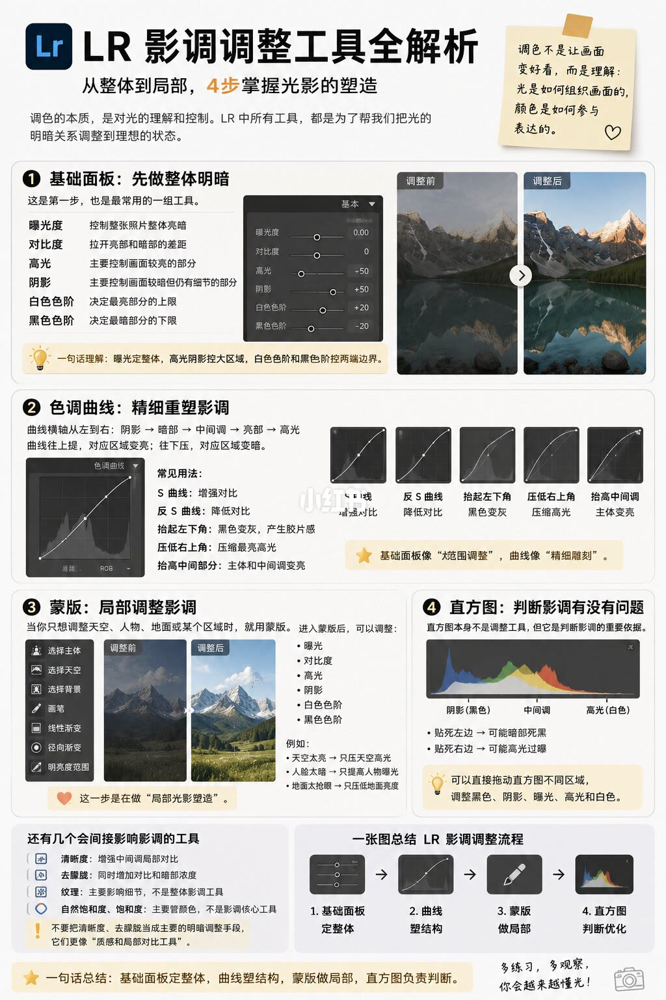

图文实录 · 小红书 · 敖舜
LR 影调调整工具全解析
这条笔记和另一条用的是同一张图：影调从基础面板到曲线、蒙版、直方图，四步从整体走到局部。
1/1
同一张四步图
右上角的便签写：调色不是把图弄好看，而是看懂光怎么组织画面、颜色怎么参与表达。
基础面板六项：曝光是整体亮暗，对比是亮暗差距，高光是较亮的部分，阴影是较暗但仍有细节的部分，白色色阶是最亮上限，黑色色阶是最暗下限。图旁有雪山前后对比，压过的云和提起来的暗部能看见，截图上的具体滑块数字无法确认。
曲线横轴从左到右：阴影、暗部、中间调、亮部、高光。上拉变亮，下拉变暗。S 形加对比，反 S 减对比，抬左下角是灰黑，压右上角是收高光，抬中段是提主体。基础面板被说成调范围，曲线被说成精修。
蒙版工具有主体、天空、背景、画笔、线性、径向、颜色范围、明亮度范围。天空只压高光，脸只提亮，地面只收反光。直方图左边顶死是暗部裁切，右边顶死是高光溢出；拖直方图不同区域会带动对应滑块。
清晰度、去朦胧、纹理、自然饱和度和饱和度会影响影调观感，图把它们放在主流程外面。主流程仍是：基础面板定整体，曲线塑结构，蒙版做局部，直方图检查。

汇总
两条链接，一张图
文件校验后，这一页和「LR 影调工具全解析」另一条笔记的 jpg 相同，结论也相同：整体、结构、局部、检查，四步分开。滑块数值图上无法确认，不要按某个固定数字去拉。